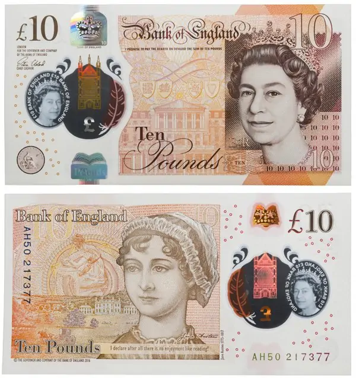
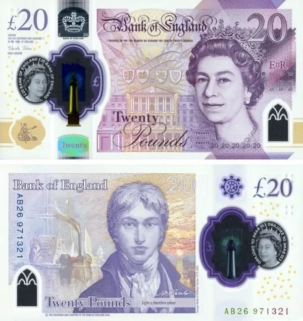

Банкноты Великобритании

Великобритания - страна необычная, в чём-то очень удивительная и странная для жителей многих других стран, начиная от правостороннего движения и заканчивая раздельными кранами с горячей и холодной водой. Необычна в Великобритании и денежная система, которая, правда, в результате перехода 1971 года в десятеричный вид, стала гораздо проще и понятней. Фунты стерлингов, соверены, гинеи, кроны, шиллинги, пенни, фартинги. Всё это английские деньги разных времён – и это лишь часть номиналов британской валюты! Так много разновидностей, такая многоступенчатая и сложная система!
Монеты
Понятия «стерлинг» и «фунт стерлингов» вошли в обиход на территории Англии ещё в эпоху Средневековья. Из 1 фунта серебра чеканили 240 мелких монет определённого веса – пенни (или, как ещё называли подобные монеты, стерлинги), которые вплоть до XIII века были наиболее распространёнными деньгами на территории Англии. Фактически само понятие «фунт стерлингов» изначально было лишь счётной денежной единицей и буквально означало весовую меру «фунт» в серебряных монетах.
Со временем номиналы становились всё более и более разнообразными. Появились шиллинги, каждый из которых был равен 12 пенни или 48 фартингам. Фунт соответственно равнялся 20 шиллингам. Шиллинги, получившие в Англии прозвище «Боб», массово чеканились до 1966 года включительно. Исключением стали 750 000 монет с датой «1970», подготовленные для «прощального» набора монет старого образца.
Пенни (или пенсы) чеканятся в Великобритании до сих пор.
Фартинг – мелкая разменная монета, в буквальном переводе – четверть. Впервые такие монеты в ¼ пенни в Англии появились ещё в XIII веке. До XVI века включительно и некоторое время в XIX веке фартинги чеканились из серебра, в остальное время – из меди и бронзы. Чеканка монет этого номинала была прекращена в 1956 году.
Впервые крупная монета, равная 240 пенни или 20 шиллингам была отчеканена в XV веке в период правления Генриха Седьмого и именовалась соверен. Чеканка такой монеты производилась из золота.Следующий после Елизаветы король Англии Яков Первый ненадолго вернул 20-шиллинговой монете прежнее имя, однако в период его правления эта монета ещё дважды меняла название: сначала на юнайт, затем на лорель. При Карле Втором, в 1663 году основной монетой Британии стала гинея – золотая монета, приравненная к 21 шиллингу, и составляющая таким образом 1,05 фунта стерлингов.
В 1694 году в Британии начался выпуск первых бумажных банкнот. Номиналы банкнот указывались в фунтах стерлингов и были крупными – от 20 до 1000. Банкноты более мелких номиналов начали появляться лишь во второй половине XVIII века – 10 фунтов в 1759 году, 5 фунтов – в 1793, банкноты номиналом 1 и 2 фунта – в 1797 году. В начале XIX века, когда в Великобритании был установлен единый золотой стандарт, основной крупной монетой вновь стал соверен, приравненный по своей стоимости к фунту стерлингов.
Чеканка соверена в качестве имеющей хождение монеты продолжалась вплоть до восьмидесятых годов XX века. В наши же дни соверен выпускается лишь в качестве коллекционных и инвестиционных монет. Крона – изначально золотая монета. Её выпуск был начал в XVI веке при короле Генрихе Восьмом. В первый год своего появления вначале была равна 4 шиллингам и 6 пенни, затем 5 шиллингам. В разные периоды крону чеканили из золота и серебра. Начиная с периода правления Георга Шестого кроны начали чеканить из медно-никелевого сплава.


Банкноты
В 1971 году Великобритания осуществила переход на десятеричную систему, в результате которой фунт был приравнен к 100 пенсам. В следующем, 1972 году, правительство Великобритании предоставило британскому фунту возможность оцениваться с помощью «плавающего курса», который не поддерживался Банком Англии. Таким образом курс национальной валюты определялся на основе торгов на международном валютном рынке. Итогом этого в 1977 году стал рекордно низкий курс главной денежной единицы Великобритании – 1,72 доллара за один фунт стерлингов. Для сравнения: ещё в 40-х годах за фунт давали больше 4 долларов, а в 60-х до 2,8. В наши же дни, правда, стоимостная разница в национальных валютах Великобритании и США ещё меньше: в 2020 году за один фунт дают около 1,3 доллара США. На сегодняшний день в Великобритании в обращении находятся банкноты 5, 10, 20 и 50 фунтов. Сейчас в этой стране выпускают банкноты серии «G» - эта линейка купюр поступает в оборот с 2007 года.
Обновлённые совсем недавно и пущенные в оборот взамен предыдущих в 2016 году банкноты 5 фунтов выполнены из полимерного материала и имеют размер 125*65 мм. На лицевой стороне, как и на всех банкнотах Великобритании размещён портрет королевы Елизаветы Второй, на оборотной – легендарного английского политического деятеля Уинстона Черчилля.

Новая «десятка» из полимерного материала появилась в кошельках подданных её Величества в 2017 году. На реверсе банкноты размещён портрет знаменитой английской писательницы Джейн Остин. Эта банкнота имеет размер 132*69 мм.
Банкнота номиналом 20 фунтов имеет хождение в двух видах. Первым является бумажная, поступившая в оборот в 2007 году, с изображением шотландского экономиста и философа Адама Смита на реверсе (размер 149*80 мм).

Второй вид - это полимерная банкнота, вышедшая в феврале 2020 года, с изображением британского живописца Уильяма Тёрнера (размер 139*73 мм).
Помимо этих банкнот в обороте современной денежной системы Великобритании находятся бумажные купюры номиналом 50 фунтов, поступившие в обращение в 2011 году. На оборотной стороне этих банкнот размещены портреты Мэттью Болтона и Джеймса Уатта – «двигателей прогресса» конца XVIII века, промышленника и инженера, работавших в тандеме. Эта банкнота имеет размер 156*85 мм.

Помимо денег, выпускаемых Великобританией, есть монеты и банкноты, которые эмитируют заморские территории - автономии, находящиеся под суверенитетом Объединённого Королевства, но не являющиеся его частью. Таких территорий на сегодняшний день в Великобритании 14. Монеты некоторых из них также имеют хождение и на Британских островах. Также номинированные в фунтах стерлингов банкноты выпускают три банка Шотландии (имеют полноценное хождение только там), Банк Англии (имеют хождение на территории Англии и Уэльса) и четыре североирландских банка (являются расчётными знаками Северной Ирландии). Эти региональные выпуски хотя и не являются полноценными деньгами, а представляют собой нечто вроде векселя, могут быть приняты на всей территории Соединённого Королевства.

Дизайн и вёерстка была
разработана Мифтаховым Айдаром